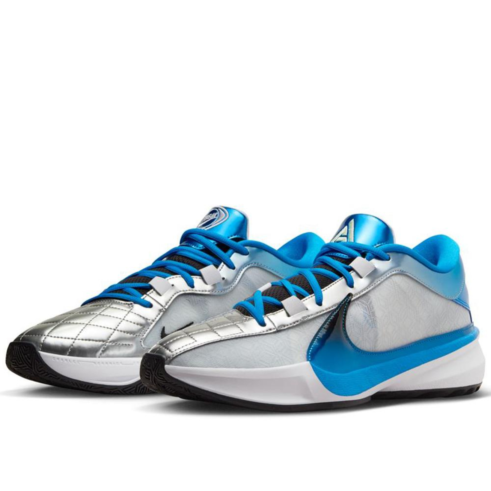
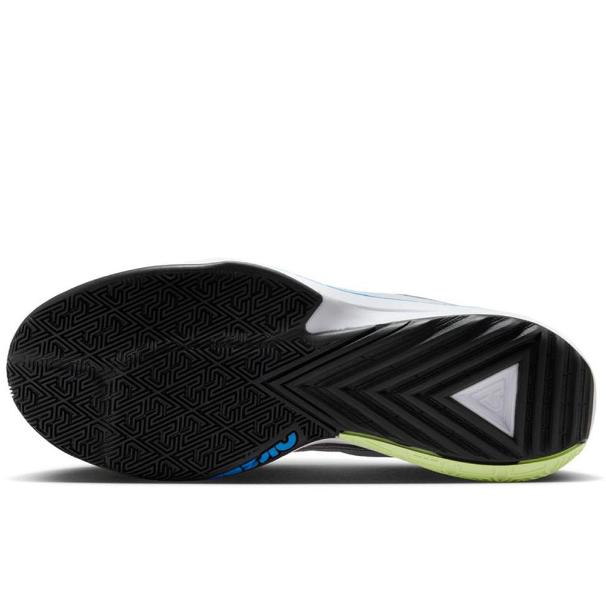
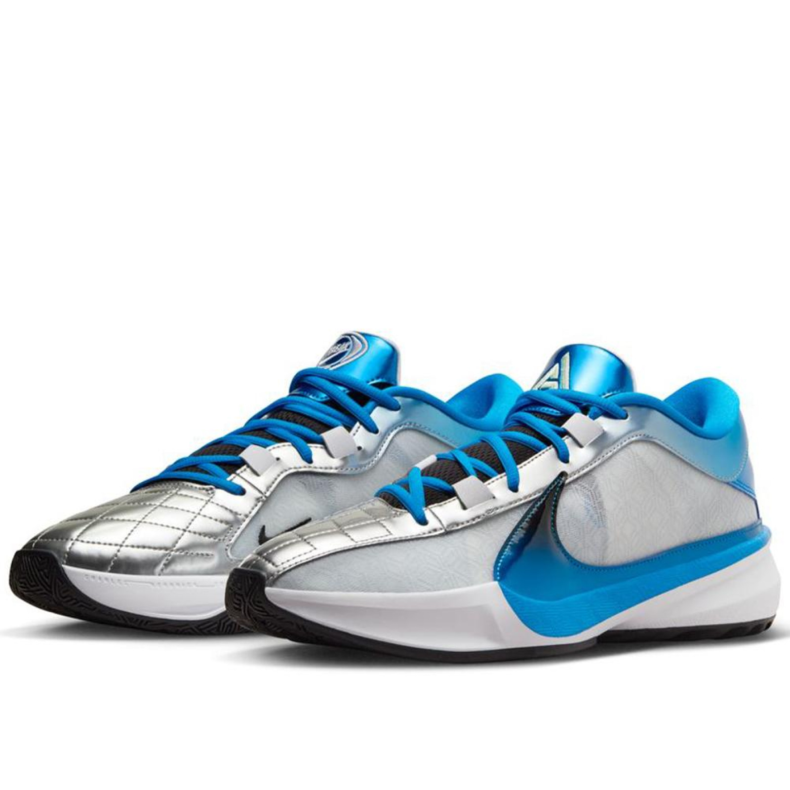
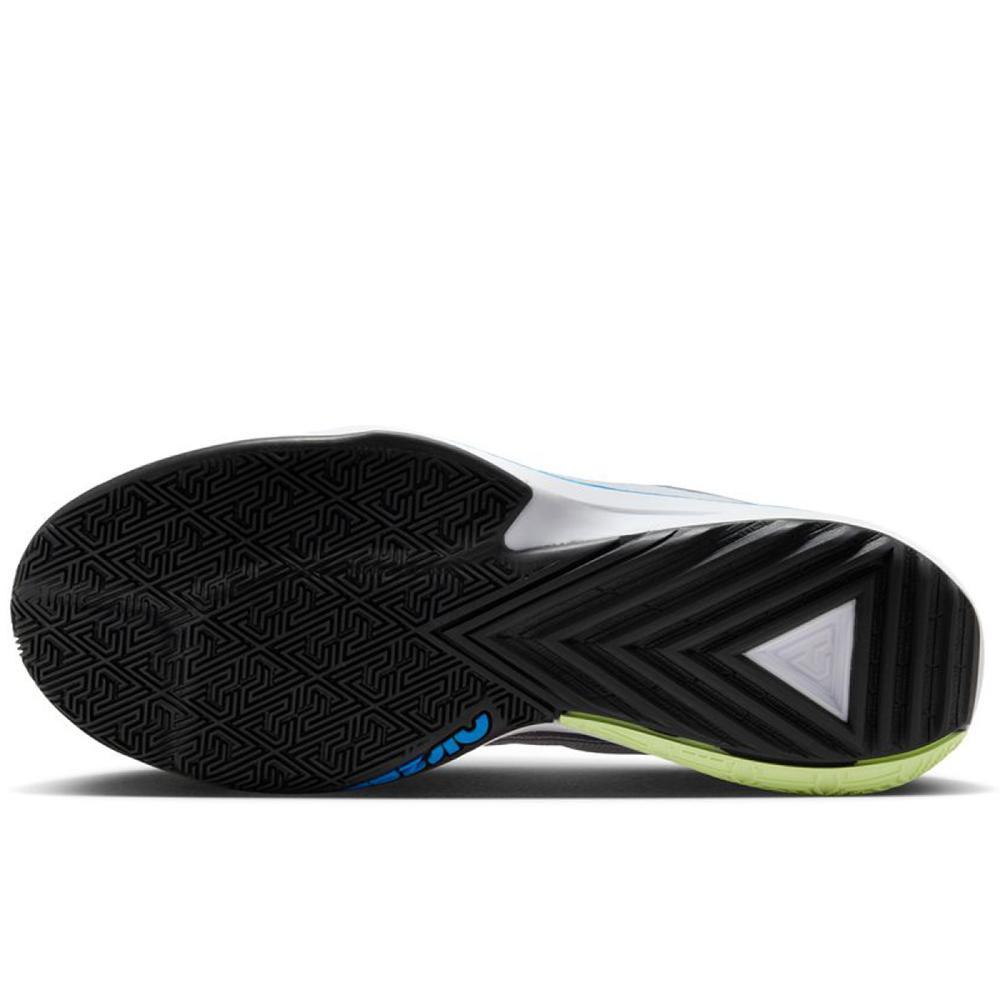

Leírás:
Az "Ode to Your First Love" nemcsak egy technikai kosárlábda-cipő, hanem egy művészi alkotás is, amely megidézi a fiatalság és az első szerelem intenzív, nosztalgikus érzését. Giannis történetének ez a része minden viselő számára különleges és személyes kapcsolódási pontot kínál, akár a pályán, akár azon kívül.